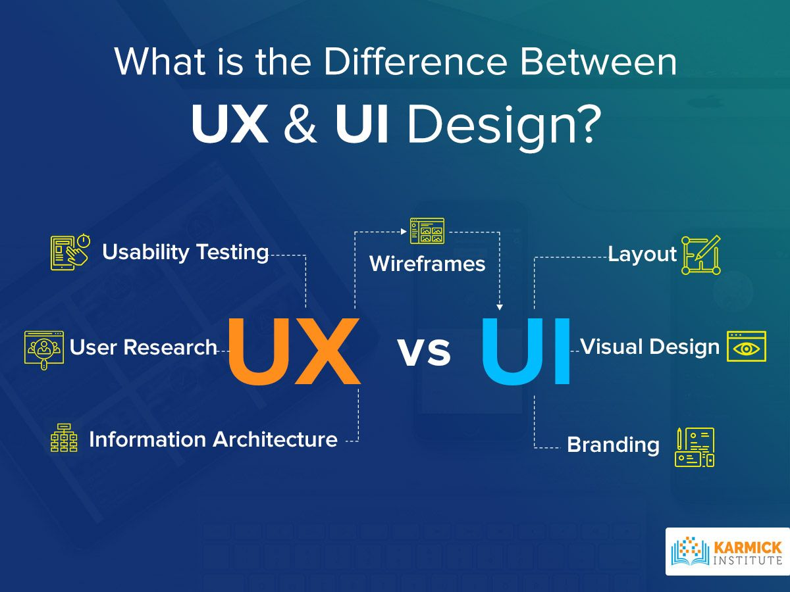
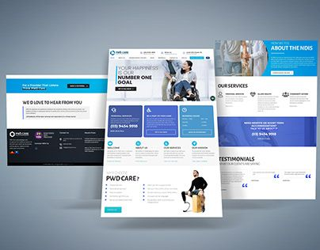
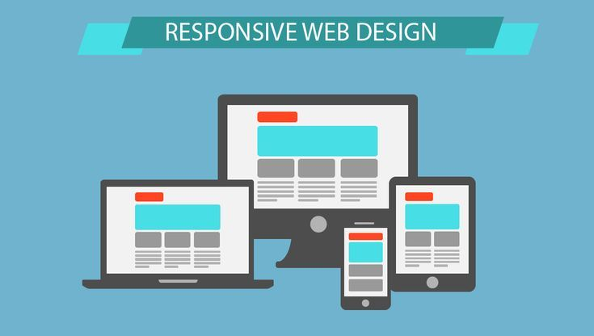
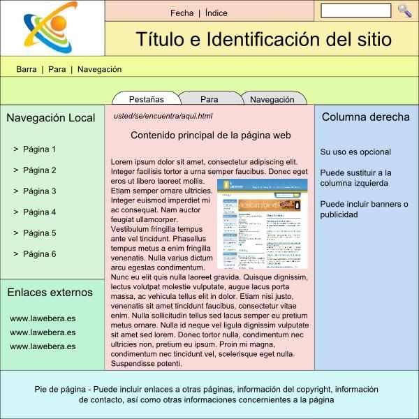
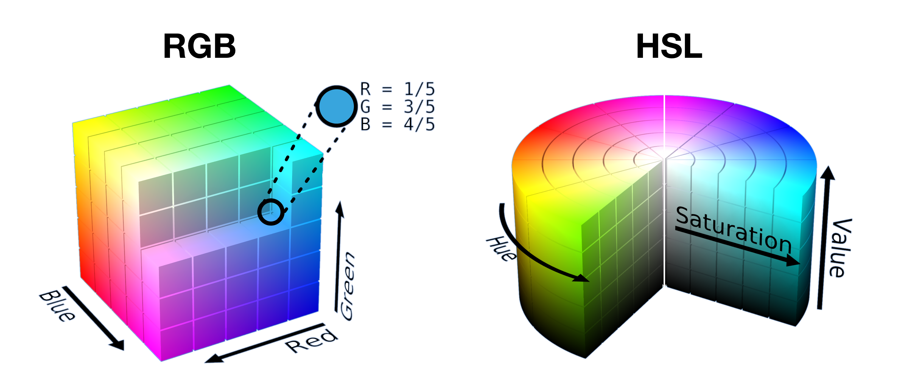
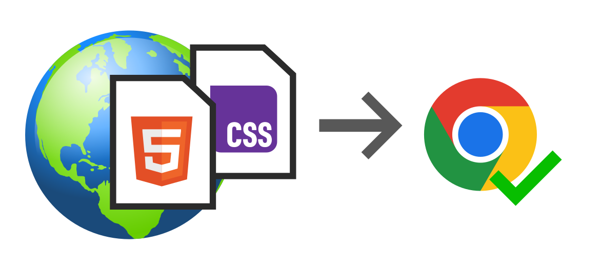
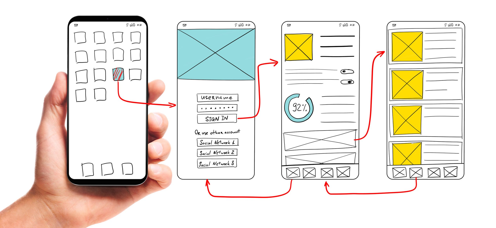

Definición de Diseño Web: Se refiere a la planificación, creación y mantenimiento de sitios web, enfocándose en la apariencia y la experiencia del usuario.
Importancia en la UX: Un buen diseño asegura que el sitio sea fácil de usar, agradable y que cumpla los objetivos del usuario.

Principios del Diseño Web
Usabilidad: El sitio debe ser intuitivo y fácil de navegar.
Accesibilidad: Debe ser utilizable por personas con diversas capacidades y discapacidades.
Estética: El atractivo visual que genera confianza y agrada al usuario.

Estructura y Maquetación
Uso de Grids y Layouts: Organizan el contenido de forma coherente y equilibrada en la página.
Diseño Responsivo: La maquetación se adapta a diferentes tamaños de pantalla (móvil, tablet, escritorio).

Tipografía
Elección Adecuada: La fuente correcta comunica la personalidad de la marca y mejora la legibilidad.
Jerarquía Tipográfica: Usar diferentes tamaños y pesos (negrita, normal) para guiar la lectura del usuario.

Colores y Paletas
Psicología del Color: Los colores evocan emociones y pueden influir en las acciones de los usuarios.
Paleta Efectiva: Elegir una combinación de colores armónica que refuerce la identidad de la marca.

Imágenes y Multimedia
Imágenes de Alta Calidad: Usar fotos e ilustraciones relevantes y optimizadas para la web.
Integración Multimedia: Videos, audios y gráficos pueden enriquecer la experiencia y comunicar ideas complejas.

Herramientas de Diseño
Software Popular: Adobe XD, Figma y Sketch son los líderes para diseñar interfaces.
Prototipado y Wireframing: Crear bocetos y prototipos interactivos antes de escribir código.

Tendencias Actuales
Diseño Minimalista: "Menos es más". Enfoque en la simplicidad y el contenido.
Microinteracciones: Pequeñas animaciones que responden a las acciones del usuario, mejorando la UX.